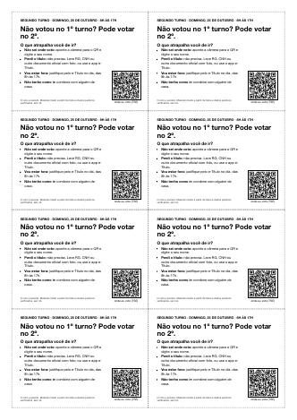

Para imprimir
Arquivos em PDF, prontos para a impressora de casa ou a copiadora.
Cole só em parede ou muro particular, com autorização do dono, e em tamanho de até meio metro quadrado. Poste, muro público e praça não. Nada no dia da eleição. Mais regras

Lambes: os 11 cards do kit em preto e branco, um por folha A4
Baixar PDF11 páginas, 2,5 MB
Cartão de bolso: “Não votou no 1º turno? Pode votar no 2º.” Oito por folha, frente e verso
Baixar PDFimprima frente e verso pela borda longa
Ver todos os impressos: lambes de todos os cards, de cada cidade e bairro, cartões, cards em A6.
Material de eleitor. Cada peça traz a fonte do fato. Feito com código, sem IA.